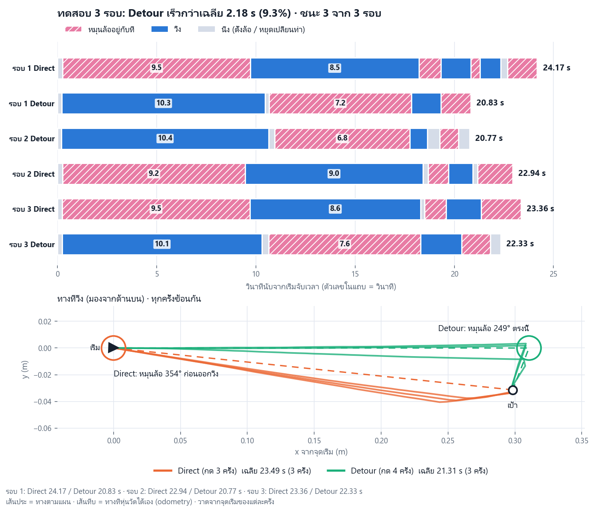

Drive on, steer less, come back
Robot. One DC motor: turning it one way steers the wheel module, counter-clockwise only (one-way clutch); turning it the other way drives forward. It can never steer and drive at the same time. The old method steers straight at the goal, so a goal a little to the right (φ close to 360°) costs almost a full turn. Idea. Two straight legs whose headings differ by more than 180° can reach any direction, so the robot may instead drive a straight on, steer only β* (180° < β* < φ), and drive b to the goal. The best β* has a closed form. Headings are counter-clockwise from the +x axis. ω steer speed, v drive speed, ts settle time, tb stop time (drive → steer), tol tolerance, rgoal arrival radius.
On the robot (mor_luam, ESP32) the module turns counter-clockwise seen from above: the same frame as this page. The firmware helper name cwErrorDeg is historical; its sign is counter-clockwise. Algorithms 1.1–1.5 plan; 1.6–1.7 are how the robot steers and drives each leg.
util/Angles.h: cwErrorDeg, cwInTolerance)For a goal at counter-clockwise angle φ > π and distance d, a detour with final heading β takes
T(β) = β/ω + ts + tb + (d/v) g(β), g(β) = [sin(β − φ) + sin φ] / sin β, g′(β) = sin φ / (1 + cos β).
detour_steer.py: closed form vs a 20 000-point grid, vs every 2-leg path on a
2° grid, and 2000 replans. All PASS.Unknown stop error. Nobody knows in advance whether the wheel stops a little past or a little short. The robot reads the real wheel angle (AS5600) and body heading (IMU) after it stops, and DetourSteer plans again from there; PlanLeg never uses the error. Inside ±tol the robot drives on its real heading, and a miss of more than rgoal is planned again.
Why stop short on purpose (Algorithm 1.6). Past its angle by more than tol, a one-way wheel needs almost a full turn; short of it, only a little more. So the robot cuts the motor early and lets the wheel coast to eland = 2° short of the angle (c, the coast time, is learned on every steer). A wheel standing inside the band is never pushed again: from rest the motor must build up power and the wheel jumps past (measured: 9°). Stopping short also means a miss always leaves the goal on the steering side of the line the robot drives on, so DriveReaim fixes it with a small turn (arctan(1/R) = 18° for R = 3, m = 2 cm) instead of a 90° turn after passing the goal.
Results in simulation, at the robot's own speeds (v = 0.03 m/s, ω = 35°/s, tb = 0.2 s, rgoal = 2.5 mm, measured on mor_luam; 5000 random goals, d ∈ [0.3, 2] m; the same goals and stop errors for both; mean time per goal):
| wheel stops | bias | sd | old method (s) | detour (s) | saved |
|---|---|---|---|---|---|
| exactly | 0° | 0° | 43.40 | 43.40 | 0.0 % |
| either way, random | 0° | 1° | 48.33 | 48.10 | 0.5 % |
| either way, random | 0° | 2° | 50.10 | 49.60 | 1.0 % |
| either way, random | 0° | 3° | 53.00 | 51.75 | 2.4 % |
| mostly short | −2° | 2° | 48.21 | 48.08 | 0.3 % |
| mostly past | +2° | 2° | 57.55 | 55.09 | 4.3 % |
| mostly past | +2° | 3° | 60.44 | 56.88 | 5.9 % |
At the robot's speeds Detour Steer was slower on 0 % of the goals in every case, but the gain on random goals is small (0–5.9 %). The robot drives slowly, so driving takes most of the time, and a detour is chosen only for goals just to the right: from φ ≥ 346° at d = 0.30 m and φ ≥ 356° at 1 m. For the goal of the robot test (0.30 m at 354°) the model gives 18.83 s against 20.16 s (6.6 %).
Other speeds (the same 5000 goals, stop error sd 2°; time saved by Detour Steer):
| drive \ steer | 20°/s | 35°/s | 60°/s | 120°/s |
|---|---|---|---|---|
| 0.03 m/s (the robot) | 2.3 % | 1.0 % | 0.4 % | 0.1 % |
| 0.10 m/s | 5.4 % | 3.8 % | 2.2 % | 0.6 % |
| 0.25 m/s | 6.7 % | 5.7 % | 4.2 % | 2.2 % |
A faster drive or a slower steer makes the detour pay more. At the robot's drive speed with steering at 20°/s, 0.2 % of the goals were a little slower with Detour Steer; at 35°/s and faster, none were.
Results on the robot (mor_luam: v = 0.03 m/s, ω = 35°/s its measured steering speed,
tb = 0.2 s, rgoal = 2.5 mm). The same task for both: before the clock starts the wheel is turned to the
start heading and is still; the goal is then placed d = 0.30 m away at φ = 354° from where the wheel really
points. The robot times each run itself and drives back to the start (not timed). 3 rounds, order old–detour,
detour–old, old–detour:
| round | old method (s) | Detour Steer (s) | saved (s) |
|---|---|---|---|
| 1 | 24.17 | 20.83 | 3.34 |
| 2 | 22.94 | 20.77 | 2.17 |
| 3 | 23.36 | 22.33 | 1.03 |
| mean | 23.49 | 21.31 | 2.18 (9.3 %) |
Detour Steer was faster in 3 of 3 rounds. It steered 3.8 s less (8.5 vs 12.4 s) and drove 1.2 s more (11.8 vs 10.6 s). The plan predicted 18.8 vs 20.2 s; the floor gave a bigger gap, because the old method’s near-full turn also needs more correction at the end. All 6 runs ended within 2.5 mm of the goal.
Closest prior work, and the difference. One-motor steer-and-drive mechanisms (US 8,424,627 B2, 2013; Sekine & Mizuuchi, ICINCO 2022) give no planner. Dubins cars that can turn one way only (Bakolas & Tsiotras, JOTA 2011; Patsko & Fedotov, 2018–2019) turn while moving. Turn-cost routing (angular-metric and quadratic TSP) orders waypoints, and predictive coast stopping (US 8,571,394 B2) stops early. None of the work found gives this closed-form detour for a robot that must stop to steer, counter-clockwise only. “Not found” is not proof that nobody did it.

Top: what each run did over time (hatched pink = steering in place, blue = driving, grey = still). The old method first steers ≈ 9.4 s in place, then drives; Detour Steer drives at once and steers less later. Bottom: the paths the robot measured (odometry), all six from one start, seen from above; dashed = the plan. (The robot steers counter-clockwise, so here the goal is to the right.)
The simulation results above use the robot's measured planning profile: 0.03 m/s, 35 degrees/s and a 2.5 mm arrival radius. Seven equal legs total 2 m; each subsequent bearing is 6 degrees clockwise of the previous one. Steering remains counter-clockwise.
Ideal model only: Direct 137.82 s / 2.00 m; Detour 110.52 s / 2.17 m, four detours. The additional return (about 1.96 m) is untimed. Three paired rounds mean six runs. These predictions are not new real-robot measurements.